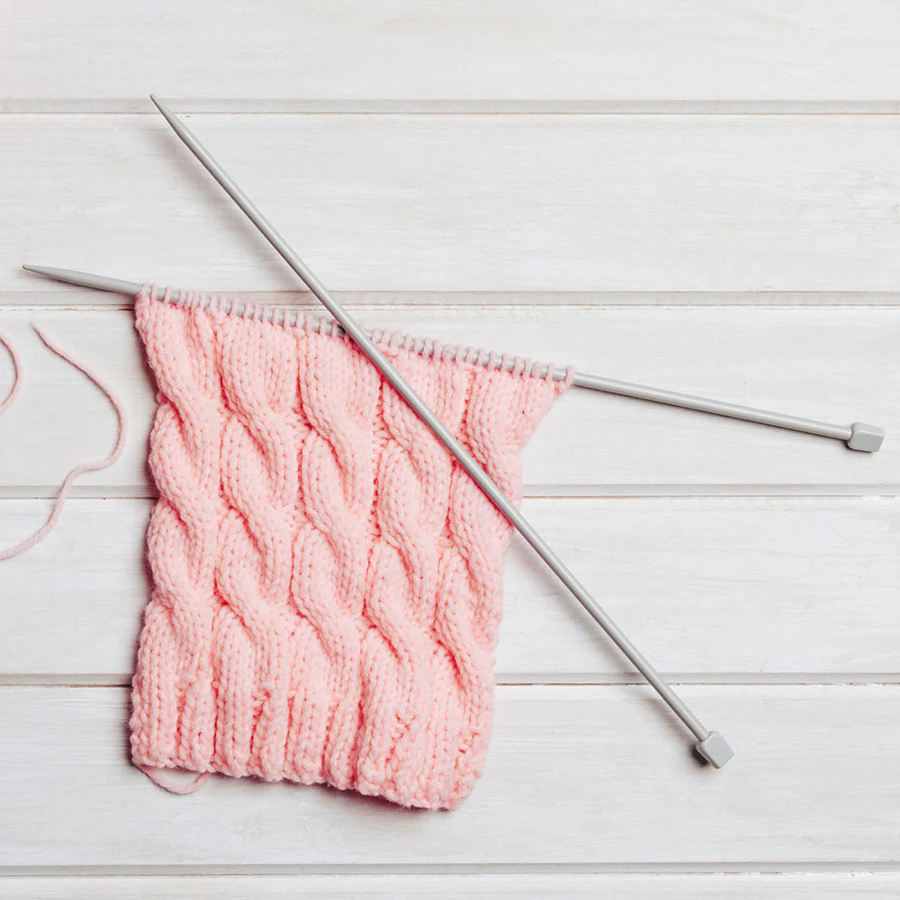
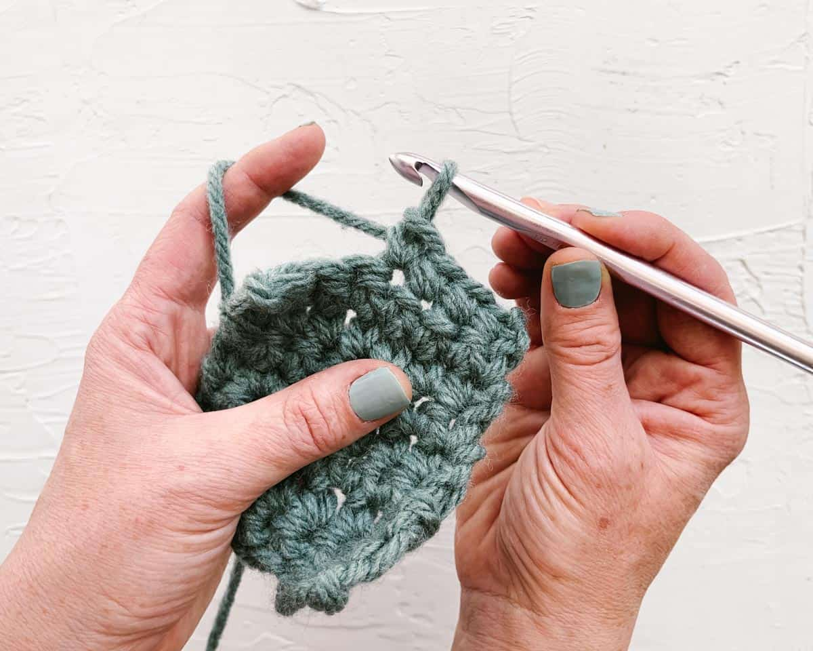
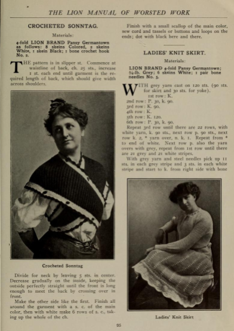

What is Crochet?
Crochet is a fiber art form that uses a fiber in a thread format, and a hooked needle. A single hook pulls loops of fiber, usually yarn through one another to produce different patterns and designs, that when combined can become different pieces. This can include textiles, clothing, accessories, bags, lace, and much more!
Crochet Examples

Crochet vs Knitting Fun Facts!

Fact 1!
Knitting uses two needles.

Fact 2!
Crochet cannot be made with machinery.

Fact 3!
Crochet is hundreds of years old.